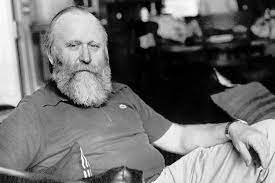

Autor
Frank Herbert, el famoso autor de la novela Dune, nació el 8 de octubre de 1920 en Tacoma, Washington, Estados Unidos, y falleció el 11 de febrero de 1986 en Madison, Wisconsin. Tenía 65 años al momento de su muerte. Herbert es conocido por su obra maestra Dune y sus secuelas, que exploran temas complejos como la supervivencia de la especie humana a largo plazo, la evolución, la ciencia y la ecología planetaria. La saga Dune se considera ampliamente entre los clásicos del género de ciencia ficción. Aunque ganó reconocimiento principalmente por sus novelas, también escribió cuentos y trabajó en diversas áreas, como periodismo, fotografía, crítica literaria y consultoría ecológica. En resumen, Frank Herbert dejó un legado duradero en la literatura de ciencia ficción y su influencia sigue siendo relevante hasta hoy
